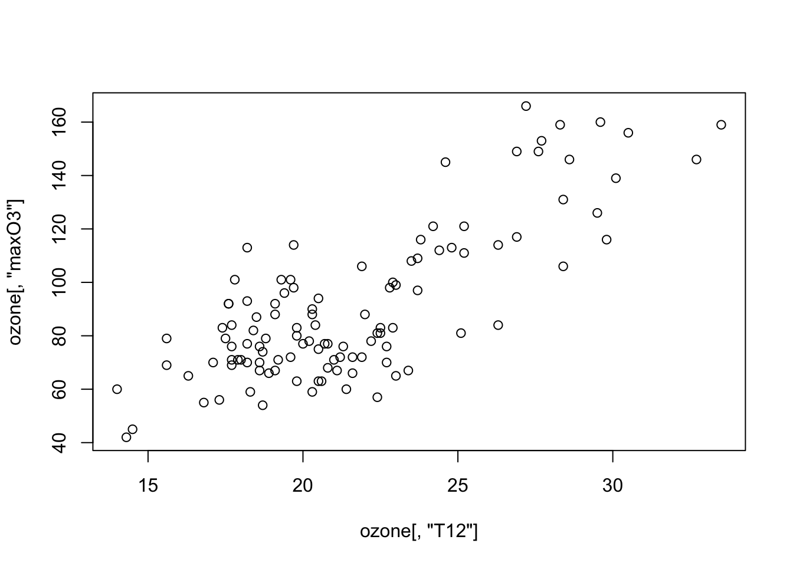
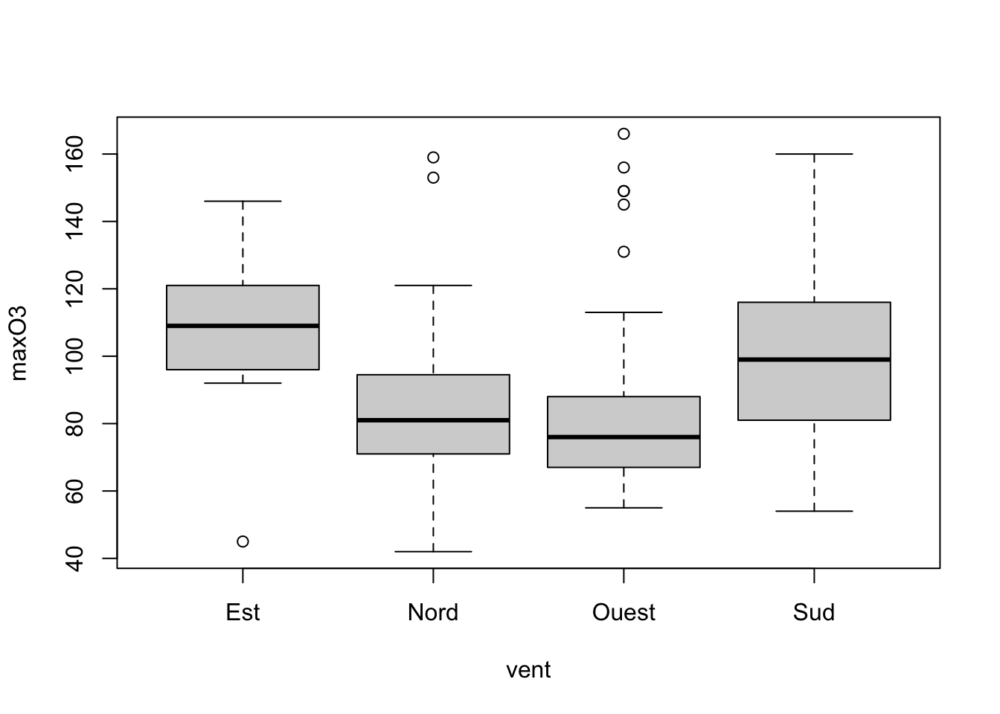

Chapter 1 Data visualization with ggplot2
Graphs are often the starting point for statistical analysis. One of the main advantages of R is how easy it is for the user to create many different kinds of graphs. We begin this chapter by studying conventional graphs, followed by an examination of some more complex representations. This final (and main) part uses the ggplot2 package.
1.1 Conventional Graphical Functions
To begin with, it may be interesting to examine few examples of graphical representations which can be constructed with R. We use the demo function:
1.1.1 The plot function
The plot function is a generic function used to represent all kinds of data. Classical use of the plot function consists of representing a scatterplot for a variable y according to another variable x. For example, to represent the graph of the function \(x\mapsto \sin(2\pi x)\) on \([0,1]\), at regular steps we use the following commands:


We provide examples of representations for quantitative and qualitative variables. We use the data file ozone.txt:
ozone <- read.table("data/ozone.txt")
summary(ozone)
maxO3 T9 T12
Min. : 42.00 Min. :11.30 Min. :14.00
1st Qu.: 70.75 1st Qu.:16.20 1st Qu.:18.60
Median : 81.50 Median :17.80 Median :20.55
Mean : 90.30 Mean :18.36 Mean :21.53
3rd Qu.:106.00 3rd Qu.:19.93 3rd Qu.:23.55
Max. :166.00 Max. :27.00 Max. :33.50
T15 Ne9 Ne12
Min. :14.90 Min. :0.000 Min. :0.000
1st Qu.:19.27 1st Qu.:3.000 1st Qu.:4.000
Median :22.05 Median :6.000 Median :5.000
Mean :22.63 Mean :4.929 Mean :5.018
3rd Qu.:25.40 3rd Qu.:7.000 3rd Qu.:7.000
Max. :35.50 Max. :8.000 Max. :8.000
Ne15 Vx9 Vx12
Min. :0.00 Min. :-7.8785 Min. :-7.878
1st Qu.:3.00 1st Qu.:-3.2765 1st Qu.:-3.565
Median :5.00 Median :-0.8660 Median :-1.879
Mean :4.83 Mean :-1.2143 Mean :-1.611
3rd Qu.:7.00 3rd Qu.: 0.6946 3rd Qu.: 0.000
Max. :8.00 Max. : 5.1962 Max. : 6.578
Vx15 maxO3v vent
Min. :-9.000 Min. : 42.00 Length:112
1st Qu.:-3.939 1st Qu.: 71.00 Class :character
Median :-1.550 Median : 82.50 Mode :character
Mean :-1.691 Mean : 90.57
3rd Qu.: 0.000 3rd Qu.:106.00
Max. : 5.000 Max. :166.00
pluie
Length:112
Class :character
Mode :character
Let us start by representing two quantitative variables: maximum ozone concentrations maxO3 in term of temperatures T12:

As the two variables are contained and named within the same table, a simpler syntax can be used, which automatically inserts the variables as labels for the axes:

We can also use (more complicated and less interesting)

We have specific functions for each kind of charts, for instance



1.1.2 Interactive graphs with rAmCharts
We can use this package to obtain dynamic graphs. It is easy, we just have to use the prefix am before the name of the function:
1.1.3 Some exercises
- Draw the sine function between 0 and \(2\pi\).
- Add the following title: Plot of the sine function, you can use the function title.
- Draw the pdf (probability distribution function) of the standard Gaussian distribution between \(-4\) and 4 (use dnorm).
- Add a vertical dashed line of equation \(x=0\) (use abline).
- On the same graph, draw Student’s \(t\)-distribution to 5 and 30 degrees of freedom (use dt). Use the lines function and a different colour for each density.
- Add a legend at the top left to differentiate between each distribution (use legend).
Read the file taches_solaires.csv series which details, data by data, the relative number of sunspots.
Using the cut_interval function from the tidyverse package, create a qualitative variable which separates the dates into 8 intervals. We call period this variable.
Use the following levels for period
Expliquer la sortie de la fonction
Visualize the sunspot series with a diffrect color for the 8 periods.
We consider the ozone dataset. With the layout function, split the window into two lines with
- the scatter plot maxO3 vs T12 on the first line;
- 2 graphs on the second lines: histogram of T12 et boxplot of maxO3.
1.2 Ggplot2 grammar
ggplot2 is a plotting system for R based on the grammar of graphics (as dplyr to manipulate data). We can find documentation at http://ggplot2.org and https://ggplot2-book.org. We consider a subsample of the diamond dataset from the package ggplot2 (or tidyverse):
1.2.1 First charts with ggplot2
We consider a subsample of the diamond dataset from the package ggplot2 (or tidyverse):
library(tidyverse)
set.seed(1234)
diamonds2 <- diamonds[sample(nrow(diamonds),5000),]
summary(diamonds2)
carat cut color clarity
Min. :0.2000 Fair : 158 D: 640 SI1 :1189
1st Qu.:0.4000 Good : 455 E: 916 VS2 :1157
Median :0.7000 Very Good:1094 F: 900 SI2 : 876
Mean :0.7969 Premium :1280 G:1018 VS1 : 738
3rd Qu.:1.0400 Ideal :2013 H: 775 VVS2 : 470
Max. :4.1300 I: 481 VVS1 : 326
J: 270 (Other): 244
depth table price
Min. :43.00 Min. :49.00 Min. : 365
1st Qu.:61.10 1st Qu.:56.00 1st Qu.: 945
Median :61.80 Median :57.00 Median : 2376
Mean :61.76 Mean :57.43 Mean : 3917
3rd Qu.:62.50 3rd Qu.:59.00 3rd Qu.: 5294
Max. :71.60 Max. :95.00 Max. :18757
x y z
Min. : 0.000 Min. :3.720 Min. :0.000
1st Qu.: 4.720 1st Qu.:4.720 1st Qu.:2.920
Median : 5.690 Median :5.700 Median :3.520
Mean : 5.728 Mean :5.731 Mean :3.538
3rd Qu.: 6.530 3rd Qu.:6.520 3rd Qu.:4.030
Max. :10.000 Max. :9.850 Max. :6.430
help(diamonds)A graph is always defined from many layers. We usually have to specify:
- the data
- the variables we want to plot
- the type of representation (scatterplot, boxplot…).
Ggplot graphs are defined from these layers. We have to specify each layer with a ggplot function :
- the data with ggplot
- the variables with aes (aesthetics)
- the type of representation with geom_
These layers are gathered with the + operator.
The scatterplot carat vs price is obtained with the plot function with

With ggplot, we use


- Draw the histogram of carat (use geom_histogram)
- Draw the histogram of carat with 10 bins (help(geom_histogram))
- Draw the barplot for the variable cut (use geom_bar)
To summarize, ggplot syntax is defined from independent elements. These elements define the grammar of ggplot. Main elements of the grammar include:
- Data (
ggplot): the dataset, it should be a dataframe or a tibble. - Aesthetics (
aes): to describe the way that variables in the data are mapped. We have to specify all variables used to build the graph in aes. - Geometrics (
geom_...): to control the type of plot (scaterplot, histogram…) - Statistics (
stat_...): to describe transformations of the data needed for the chart. - Scales (
scale_...): to control the mapping from data to aesthetic attributes (change of colors, options for the axis…)
All these elements are combined with a +.
1.2.2 Data et aesthetics
We have two use these elements for all graphs. ggplot verb is used to indicate the dataset. If the syntax is efficient, you will never have to use the name of the dataset to obtain the required graph. aes verb is used to specify the variables we want to visualize. For instance, for a scaterplot price vs carat, the syntax should start with
aes also possesses arguments such as color, size, fill. We use these options as soon as a color or a size is defined from a variable of the dataset. For instance
1.2.3 Geometrics
To draw a graph, we need to specify the type of representation. We have to use geometrics to do that. For a scatter plot, we use geom_point:

Observe that ggplot adds the lengend automatically. Examples of geometrics are described here:
| Geom | Description | Aesthetics |
|---|---|---|
| geom_point() | Scatter plot | x, y, shape, fill |
| geom_line() | Line (ordered according to x) | x, y, linetype |
| geom_abline() | Line | slope, intercept |
| geom_path() | Line (ordered according to the index) | x, y, linetype |
| geom_text() | Text | x, y, label, hjust, vjust |
| geom_rect() | Rectangle | xmin, xmax, ymin, ymax, fill, linetype |
| geom_polygon() | Polygone | x, y, fill, linetype |
| geom_segment() | Segment | x, y, xend, yend, fill, linetype |
| geom_bar() | Barplot | x, fill, linetype, weight |
| geom_histogram() | Histogram | x, fill, linetype, weight |
| geom_boxplot() | Boxplots | x, y, fill, weight |
| geom_density() | Density | x, y, fill, linetype |
| geom_contour() | Contour lines | x, y, fill, linetype |
| geom_smooth() | Smoothers (linear or non linear) | x, y, fill, linetype |
| All | color, size, group |
Draw the barplot of cut (with blue bars).
Draw the barplot of cut with one color for each modality of cut. Add a legend.
Draw the barplot of cut with one color of your choice for each modality of cut (and without lengend since it is not useful here).
1.2.4 Statistics
Many graphs need transformations the data to make the representation. Ut is for example the case for histogram or barplot: we have to calculate the heights for rectangles or bars. These heigths are not explicitely specified in the dataset. Simple transformations can be obtained quickly with ggplot2. For instance we can draw the sine function with

The sine transformation is indicated in aes. For more complex transformations, we have to used statistics. A stat function takes a dataset as input and returns a dataset as output, and so a stat can add new variables to the original dataset. It is then possible to map aesthetics to these new variables. For example, stat_bin function, the statistic used to make histograms, produces the following variables:
count, the number of observations in each bin ;density, the density of observations in each bin (percentage of total / bar width) ;x, the center of the bin.
By default geom_histogram represents on the \(y\)-axis the number of observations in each bin (the output count).

If we are interested by another output of stat_bin, the density for instance, we have to use

ggplot proposes another way to make the representations: we can use stat_ instead of geom_. Formally, each stat_… function has a geom_… and each geom_… has a stat_…. We can draw the same graph as above with
Here are some examples of stat functions :
| Stat | Description | Parameters |
|---|---|---|
| stat_identity() | No transformation | |
| stat_bin() | Count | binwidth, origin |
| stat_density() | Density | adjust, kernel |
| stat_smooth() | Smoother | method, se |
| stat_boxplot() | Boxplot | coef |
stat and geom are not always easy to combine. For beginners, we recommend to use geom for beginners.
We consider a color variable \(X\) with probability distribution \[P(X=red)=0.3,\ P(X=blue)=0.2,\ P(X=green)=0.4,\ P(X=black)=0.1\] Draw the barplot of this distribution.
Visualize the non lineaar smoother for the variable
pricein terms ofcarat. You can usegeom_smooth, thenstat_smooth.Same question but use a dotted line instead of a solid line.
1.2.5 Scales
Scales control the mapping from data to aesthetic attributes (change of colors, sizes…). We generally use this element at the end of the process to refine the graph. Scales are defined as follows:
- begin with
scale_ - add the aesthetics we want to change (
color,fill,x_) - end with the name of the scale (
manual,identity…)
For instance,
ggplot(diamonds2)+aes(x=carat,y=price,color=cut)+geom_point()+
scale_color_manual(values=c("Fair"="black","Good"="yellow",
"Very Good"="blue","Premium"="red","Ideal"="green"))
Here are the main scales:
| aes | Discrete | Continuous |
|---|---|---|
| Color (color et fill) | brewer | gradient |
| - | grey | gradient2 |
| - | hue | gradientn |
| - | identity | |
| - | manual | |
| Position (x and y) | discrete | continous |
| - | date | |
| Shape | shape | |
| - | identity | |
| - | manual | |
| Size | identity | size |
| - | manual |
We now present some examples on scales:
color in a barplot
We change colors by using the palette Purples :

Gradient color for a scatter plot:

We change the gradient color

Change on the axis
p2+scale_x_continuous(breaks=seq(0.5,3,by=0.5))+scale_y_continuous(name="prix")+scale_color_gradient("Profondeur")
1.2.6 Group and facets
ggplot allows to make representations for subgroup of individuals. We can proceed in two ways:
- to represent subgroup on the same graph => group in aes
- to represent subgroup on the different graphs => facets
We represent (on the same graph) the smoother price vs carat for each modality of cut with
To obtain the representation on many graphs, we use


facet_grid and facet_wrap do the same job but split the screen in different ways:


1.3 Complements
Syntax for ggplot is defined according to the following scheme:
It is really flexible: for instance aes could also be specified in ggplot or in geom_


It could be very useful when we want to use different aes in the geom_
We can also build a chart from many dataset:
X <- seq(-2*pi,2*pi,by=0.001)
Y1 <- cos(X)
Y2 <- sin(X)
donnees1 <- data.frame(X,Y1)
donnees2 <- data.frame(X,Y2)
ggplot(donnees1)+geom_line(aes(x=X,y=Y1))+
geom_line(data=donnees2,aes(x=X,y=Y2),color="red")
Many other functions are proposed by ggplot:
- ggtitle to add a title.
- ggsave ta save a graph.
- theme_ to change the theme of the graph.


Many other themes are available in the ggtheme package. The function set_theme can be used to change the default theme in a markdown document.
1.4 Some exercises
Draw the sine and cosine functions on the same graph. You first have to use two datasets (one for the sine function, the other for the cosine function).
Do the same with one dataset and 2
geom_line.Do the same with one dataset and 1
geom_line. Hint: use the pivot_longer function from the tidyverse package.Draw the two functions on two different graphs (use facet_wrap).
Do the same with the function grid.arrange from the package gridExtra.
We consider the mtcars dataset:
data(mtcars)
summary(mtcars)
mpg cyl disp
Min. :10.40 Min. :4.000 Min. : 71.1
1st Qu.:15.43 1st Qu.:4.000 1st Qu.:120.8
Median :19.20 Median :6.000 Median :196.3
Mean :20.09 Mean :6.188 Mean :230.7
3rd Qu.:22.80 3rd Qu.:8.000 3rd Qu.:326.0
Max. :33.90 Max. :8.000 Max. :472.0
hp drat wt
Min. : 52.0 Min. :2.760 Min. :1.513
1st Qu.: 96.5 1st Qu.:3.080 1st Qu.:2.581
Median :123.0 Median :3.695 Median :3.325
Mean :146.7 Mean :3.597 Mean :3.217
3rd Qu.:180.0 3rd Qu.:3.920 3rd Qu.:3.610
Max. :335.0 Max. :4.930 Max. :5.424
qsec vs am
Min. :14.50 Min. :0.0000 Min. :0.0000
1st Qu.:16.89 1st Qu.:0.0000 1st Qu.:0.0000
Median :17.71 Median :0.0000 Median :0.0000
Mean :17.85 Mean :0.4375 Mean :0.4062
3rd Qu.:18.90 3rd Qu.:1.0000 3rd Qu.:1.0000
Max. :22.90 Max. :1.0000 Max. :1.0000
gear carb
Min. :3.000 Min. :1.000
1st Qu.:3.000 1st Qu.:2.000
Median :4.000 Median :2.000
Mean :3.688 Mean :2.812
3rd Qu.:4.000 3rd Qu.:4.000
Max. :5.000 Max. :8.000 Draw the histogram of
mpg(use many number of bins).Always for the histogram, represent the density on the \(y\)-axis.
Draw the barplot of
cyl.Draw the scatter plot
disp vs mpgwith one color for each value ofcyl.Add the linear smoothers, one linear smoother for each value of
cyl.
Simulate a sample \((x_i,y_i),i=1,\dots,100\) according to the linear model \[y_i=3+x_i+\varepsilon_i\] where the \(x_i\)’s are i.i.d. with uniform distribution over \([0,1]\) and \(\varepsilon_i\)’s are gaussian \(N(0,0.2^2)\) (use runif and rnorm)
Draw the scatter plot y vs x and add the linear smoother.
Draw the residuals: add a vertical line from each point to the linear smoother (use geom_segment).
We consider the diamonds dataset.
Draw the following graphs (use coord_flip for the second one).


Add on the third graph a vertical line for the quartiles of the variable carat (for each value of cut).

Add a horizontal boxplot under each graph (use the ggstance package) to obtain the following chart: